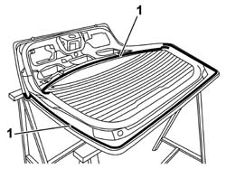
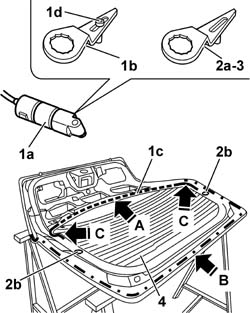
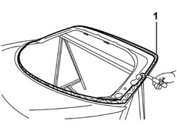
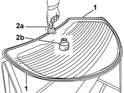
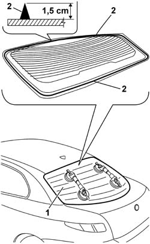
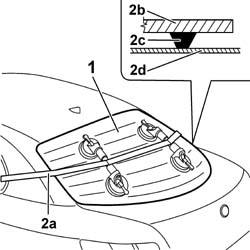

7035B14 REAR WINDOW GLASS R R INCLUDES CLEANING OF HOUSING
- Path
- Procedures > 70 FITTINGS > 7035 BODYSHELL WINDOWS > 7035B REAR WINDOW > 7035B14 REAR WINDOW GLASS R R INCLUDES CLEANING OF HOUSING
- Kind
- repair procedure (removal / refitting; the operation number is the code)
- Applies to
- all engines; all production periods
- Interactive page
- https://sloeber94.github.io/elrnDB-aGt/en/#/125001844
Applies to: all engines; all production periods
Op. 7015A04 TAILGATE INTERIOR PANEL - R+R
Op. 5550D16 THIRD STOP LIGHT - R+R
Op. 7015A58 INTERNAL TAILGATE MOULDING (ONE) - R+R
Op. 7015B10 SINGLE TAILGATE LOCK - R+R OR REPAIR WITH PANEL/PROTECTION REMOVED
Position the tailgate on special stands and retain it so that the subsequent cutting operation can be carried out.
1. Apply a double layer of adhesive tape to protect the edges of the bodywork.

Applies to: all engines; all production periods
Use a vibrating knife to cut, following the instructions given below.
1. Use the vibrating knife (1a), with a short flat blade (1b), and cut the bead of sealant (1c) along the upper section (A) of the rear windscreen, working from inside the tailgate. Position the pin (1d) on the blade to prevent damaging the paintwork.
2. Fit the long flat blade (2a) and cut the bead of sealant along the side and bottom sections (B) of the rear window, working from outside the tailgate. During cutting, be careful with the rear window's centring side pins (2d).
3. Using the previous blade, but working from inside the tailgate, cut the corner sections (C) of the rear windscreen.
4. After having cut the entire bead of sealant, lift up the tailgate, with the help of a second operator, and leave the rear windscreen resting on the support stands.

Applies to: all engines; all production periods
1. Using a suitable tool, cut and smooth off the bead of sealant in the rear window frame, so as to leave a thickness of between 0.25 and 1 mm, without scratching the paintwork. The sealant left in the frame will act as a backing for the new bond.

Applies to: all engines; all production periods
1. Degrease the screen printed area around the edge of the new window to be glued.
2. Using the swab (2a) supplied in the kit, apply the glass adhesion promoter (primer) (2b) on the printed perimeter.

Applies to: all engines; all production periods
Remove the adhesive tape from the edges of the bodywork.
Clean the rear window seating carefully with compressed air and degrease thoroughly with heptane. If glueing takes place 60 minutes after cutting and smoothing the bead of sealant, treat the sealant surface with the specific activator and wait 15 minutes before fixing the window.
 | Type | Component | Name | Qty. |
|---|---|---|---|---|
- | PUR activator | REARSCREEN HOUSING | - | - |
Touch up the paintwork if necessary.
1. Carry out a test fitting supporting the rear windscreen using special suction pads and centre it perfectly using the special centering pins.
2. Use an air gun to extrude a bead of sealant as evenly as possible along the perimeter of the rear window (immediately inside the edge of the seal).
| Type | Component | Name | Qty. |
|---|---|---|---|---|
4 | Product n° 71711976 | REARSCREEN GLASS | Window bonding sealant | - |

Applies to: all engines; all production periods
1. With the assistance of a second operator, fit the rear window in its seating immediately after applying the sealant, inserting the centering pins and then bed it in place.
2. Fit the retaining belt (2a) as shown in the figure and adjust belt tension to apply uniform pressure over the entire back window in order to ensure a correct match between window (2b), sealant (2c) and rear window frame (2d).

Applies to: all engines; all production periods
Before refitting the car's exterior and interior components, check that there are no leaks by conducting a water test.
Position the wiring on the retaining clips on the tailgate and connect the electrical connections to the rear windscreen.
Op. 7015B10 SINGLE TAILGATE LOCK - R+R OR REPAIR WITH PANEL/PROTECTION REMOVED
Op. 7015A58 INTERNAL TAILGATE MOULDING (ONE) - R+R
Op. 5550D16 THIRD STOP LIGHT - R+R
Op. 7015A04 TAILGATE INTERIOR PANEL - R+R
Op. 7015A14 TAILGATE - ADJUST CENTRING AND PROFILE - INCLUDES HINGE AND COMPARTMENT SEAL ADAPTATION
Topics linked from this page (6)
- 5550D16 THIRD STOP LIGHT - R+R
- 7015A04 TAILGATE INTERIOR PANEL - R+R
- 7015A14 TAILGATE - ADJUST CENTRING AND PROFILE - INCLUDES HINGE AND COMPARTMENT SEAL ADAPTATION
- 7015A58 INTERNAL TAILGATE MOULDING (ONE) - R+R
- 7015B10 SINGLE TAILGATE LOCK - R+R OR REPAIR WITH PANEL/PROTECTION REMOVED
- 7210E56 TAIL-GATE